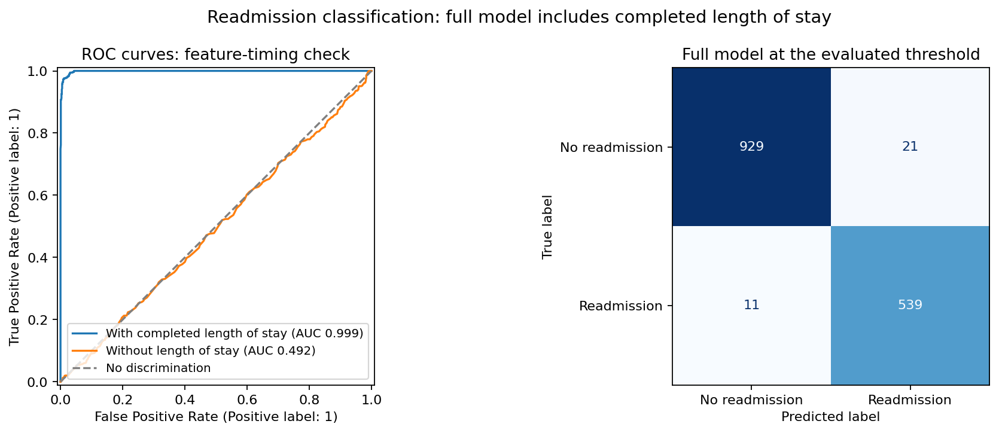
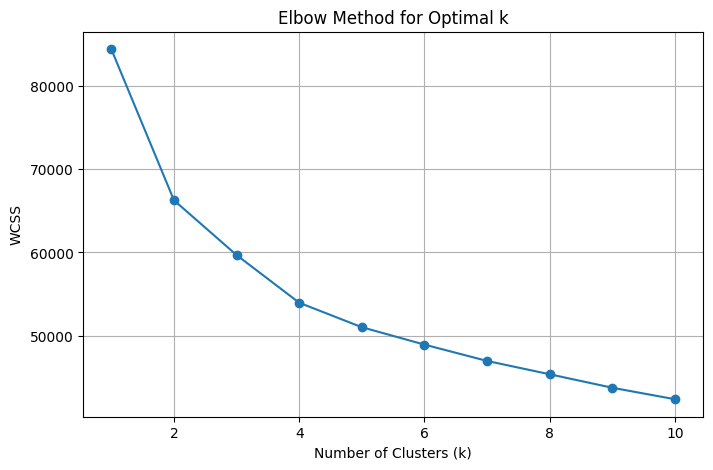

Business question
How well can hospital records classify readmission, and what patient groups emerge from clustering?
Approach
How the work was done
- Compared 216 Random Forest parameter combinations with five-fold cross-validation, then evaluated the selected forest on a held-out test set.
- Used the Elbow Method to select three K-Means segments, then applied PCA to inspect cluster separation and profiles.
Results
What the analysis shows
- The full discharge-time model achieved 97.9% accuracy, 96.3% precision, 98.0% recall, 0.971 F1, and 0.999 ROC-AUC.
- The separate clustering notebook uses 14 features and excludes readmission. One group averaged 9 days and $3,212 in charges; another averaged 60 days and $7,401. The oldest group averaged 74 years, and 95% reported high blood pressure. These profiles do not establish future readmission risk.
From the project
Model evaluation and patient groups

How performance depends on feature timing
The same held-out records give ROC-AUC 0.999 with completed length of stay and 0.492 without it. The confusion matrix describes the full model at the evaluated threshold.

Choosing the number of patient groups
The early reductions in within-group variation informed the choice of three clusters. These groups describe similar records; they do not establish future readmission risk.
Additional validation
Feature timing at discharge
Initial_days records completed length of stay, available at discharge. A sensitivity check removes that feature and repeats the selected-model evaluation. ROC-AUC falls from 0.999 to 0.492, near chance. This limits the full model to discharge-time analysis; decisions at admission need a model validated on information available then.
Business relevance
What this makes easier to decide
The classifier provides a way to rank records for discharge-time review, while cluster profiles help explore differences in service use. Neither analysis establishes that follow-up will reduce readmissions.